Começar
Desenhar a ventilação por cima da planta
O VentiCondutas desenha salas, condutas e terminais por cima da planta do arquiteto e calcula enquanto desenha. Este manual tem quatro partes. Leia a primeira de seguida; as outras consultam-se quando for preciso.
Os passos têm números em quadrados claros. Os círculos escuros 1 2 apontam o sítio na imagem e aparecem no texto onde esse sítio é usado. Tudo o que se faz na planta entra no Ctrl+Z, por isso pode experimentar à vontade.
Preparar o piso
Desenha-se um piso de cada vez, por cima da imagem da planta. Sem escala a app desenha, mas não mede áreas nem comprimentos.
- No passo Levantamento ou Rede, abra o separador Planta e carregue a imagem do piso (JPG ou PNG; de um PDF, exporte a página com pelo menos 150 ppp).
- Para outro piso, use + Piso. Cada piso guarda o seu zoom e a sua posição.
- Escolha Escala (S) e clique nas duas pontas de uma cota conhecida 1 2.
- Escreva a medida em metros 3 e carregue em Enter.
- Sem nada selecionado, o painel mostra o piso: escreva o Pé-direito por omissão, que passa a ser proposto às salas desse piso.
A barra de estado, no rodapé, mostra a escala (ex.: «1 m = 54,5 px»).
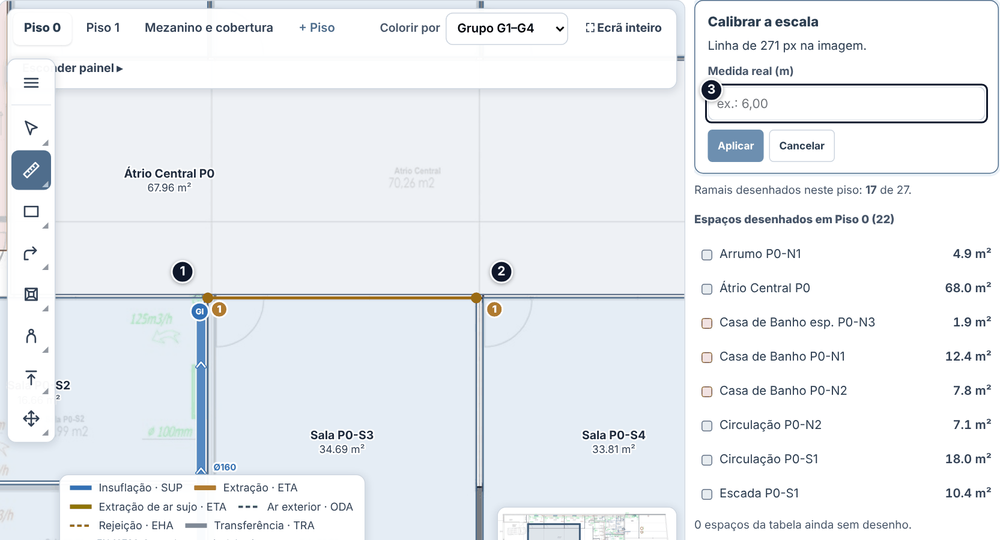
- A barra de estado diz «por calibrar»: falta a escala. Volte ao passo 3.
- A planta não tem cotas: desenhe uma sala com área conhecida e use Calibrar a escala pela área desta sala, no painel da sala.
Conhecer o ecrã
A planta ocupa o ecrã; tudo o resto flutua por cima.
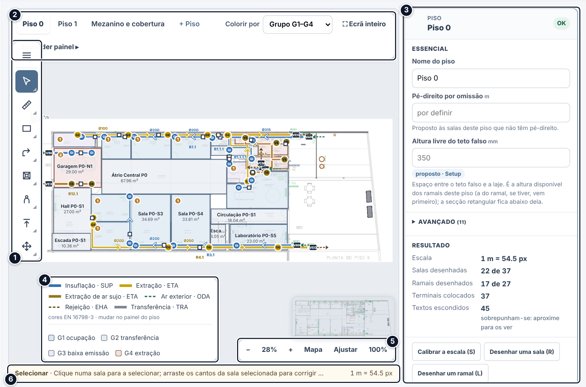
| Zona | Para quê | |
|---|---|---|
| 1 | Barra de ferramentas | Uma ferramenta de cada vez, arrumadas por grupos. O ícone ativo fica escuro. |
| 2 | Barra de cima | Mudar de piso, Colorir por (grupo, dados em falta, balanço) e ecrã inteiro. |
| 3 | Painel lateral | O objeto selecionado: dados, resultado, o que falta e ações. Sem seleção, o piso. |
| 4 | Legenda | Cores das redes e dos grupos das salas. |
| 5 | Zoom e mapa | − / + / Ajustar / 100 % e o mapa do piso inteiro. |
| 6 | Barra de estado | O que a ferramenta espera a seguir, medidas ao vivo e a escala. |
Não precisa de saber as teclas
Cada grupo da barra abre os seus ícones ao passar o rato (ou ao tocar no canto ◢). Cada ícone mostra o nome, a tecla e o que faz. O botão direito num objeto mostra as ações desse objeto.
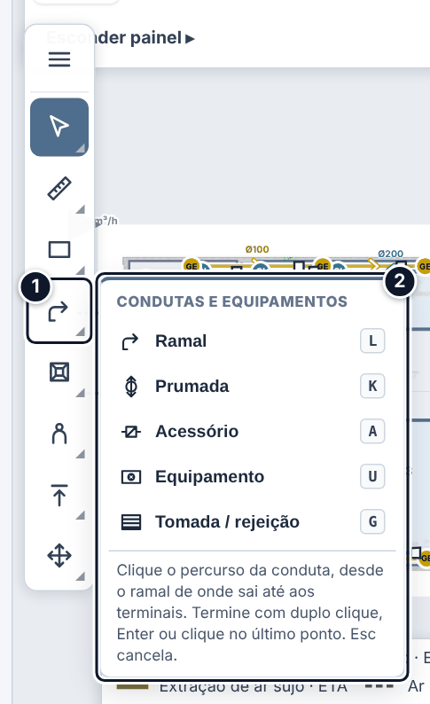
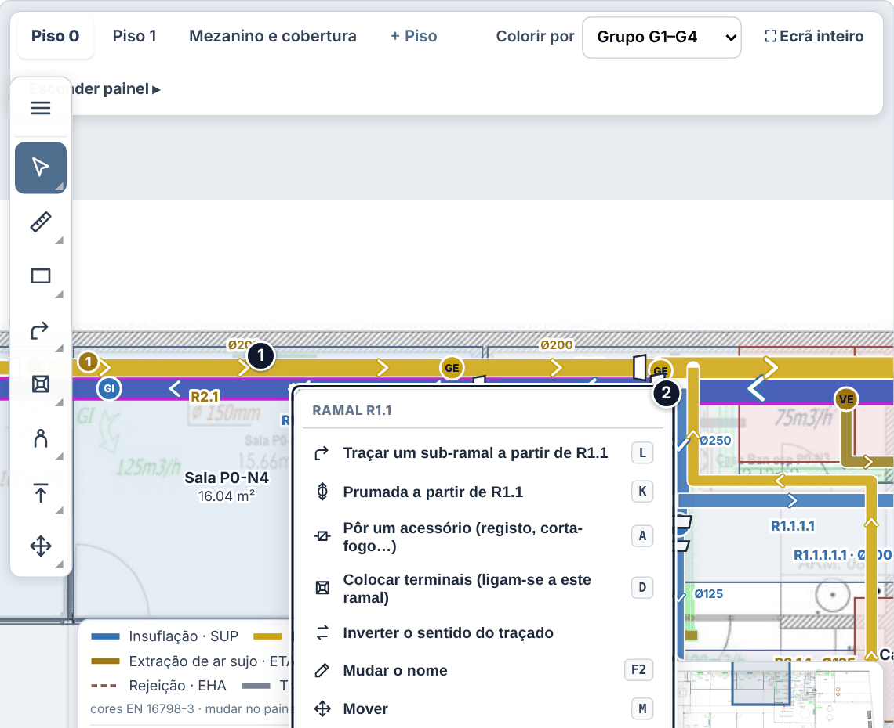
Regra geral: um clique escolhe, arrastar muda, Enter confirma, Esc cancela.
Primeiro projeto: a garagem do Degrade
Refazer a garagem do exemplo num projeto vazio ensina o essencial: sala, equipamentos, ramais, terminais e verificação. Tenha a planta do Piso 0 aberta e a escala calibrada (1 m = 54,5 px).
A · A sala
- Escolha Retângulo (R) e clique no canto superior esquerdo da garagem.
- Escreva
5,9;4,9e Enter. - No painel, crie o espaço «Garagem P0-N1», tipo Garagem.
- Em Lugares de estacionamento, escreva 1.
O painel mostra a área medida (cerca de 29 m²). Abaixo de 200 m² não é parque (UT II): a app aplica a boa prática de 300 / 600 m³/h por veículo.
B · Os ramais e os equipamentos
- Escolha Ramal (L) e clique junto à parede exterior, em baixo.
- Com Shift e o rato para a direita, escreva
4,65, Enter e Enter outra vez. - No cartão: tipo VEX, rede extração de ar sujo, nome «VEX Garagem P0-N1»; Criar equipamento e Criar ramal.
- Repita em cima com tipo VIN, rede insuflação, «VIN Garagem P0-N1».
- Escolha Terminal (D): clique duas vezes no ramal de cima (2 GI de 270 m³/h) e duas no de baixo (2 GE de 300 m³/h).
C · Fechar o balanço e verificar
- Selecione a sala e, em Avançado, escreva 60 m³/h em Abertura para o exterior (grelha na porta).
- Confira as setas: na insuflação vão do VIN para as GI; na extração, das GE para o VEX.
- Confira que a sala não tem círculo numerado e que o painel do piso diz OK.
Insuflação 540 + porta 60 = extração 600 m³/h: balanço equilibrado, garagem em depressão face ao edifício.
Para comparar, abra o exemplo Degrade 21 nov26 · corrigido (Projeto → Exemplos) e selecione a Garagem P0-N1.
Como fazer
Receitas, uma por tarefa
Cada receita diz para que serve, os passos (no máximo sete), o resultado esperado e o que fazer se correr mal. Os grupos seguem a barra de ferramentas.
Salas
Desenhar uma sala
Cada sala desenhada liga-se a um espaço da tabela, ou cria um novo; a área medida pode passar para a tabela.
- Escolha Retângulo (R) para salas retangulares, ou Polígono (P) para salas em L, em U ou com paredes oblíquas.
- Retângulo: arraste de um canto 1 ao oposto 2, ou clique um canto e escreva
4;3+ Enter. - Polígono: clique os cantos pela ordem e feche no primeiro ponto, com duplo clique ou Enter.
- No painel 3, escolha o espaço da tabela e Ligar, ou escreva nome, tipo e ocupação e Criar espaço.
A sala fica com a cor do seu grupo (G1–G4) e o painel mostra a área medida.
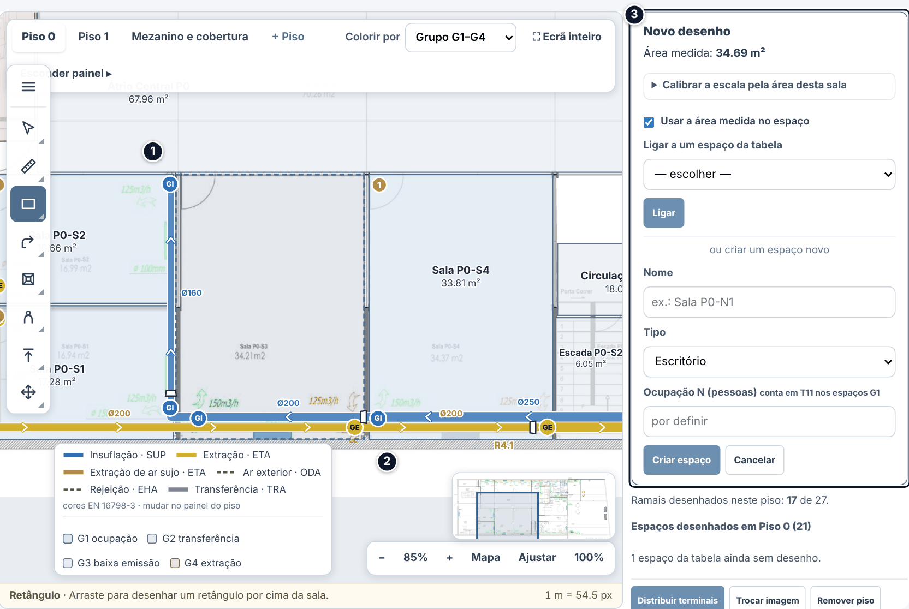
Agarrar paredes e cantos
O ponto prende-se ao que está perto: primeiro às salas já desenhadas, depois aos cantos e faces das paredes da imagem, por fim à grelha. O marcador laranja diz em quê encaixou. Para uma sala colada à vizinha, comece no canto dela.
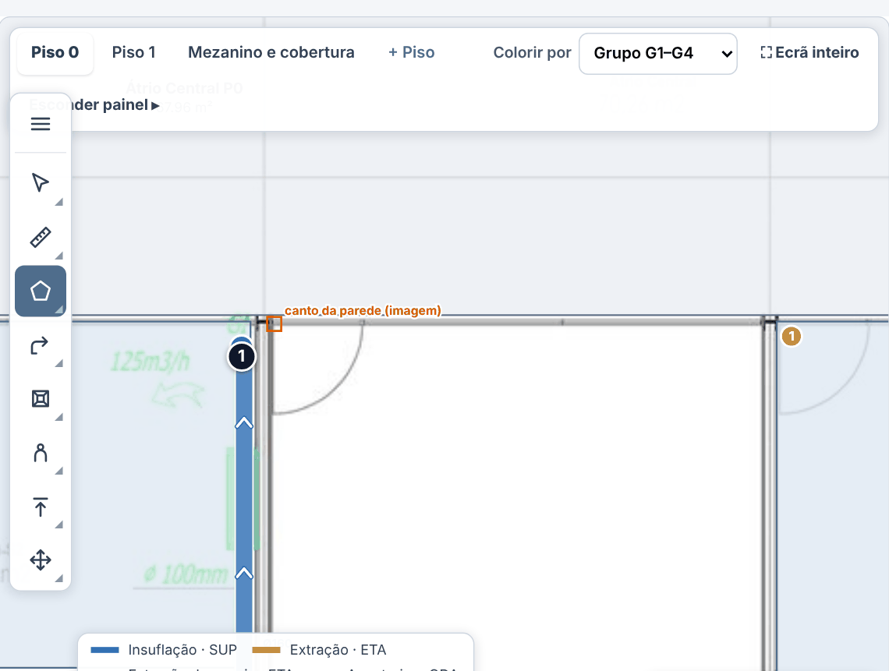
Medidas exatas. Depois do primeiro ponto, aponte a direção com o rato, escreva 3,5 e Enter. Com Shift o ponto fica na horizontal ou na vertical do anterior.
- O ponto salta para onde não quer: mantenha Alt para desligar o encaixe nesse clique, ou F3 para o desligar até voltar a carregar.
- A app recusa a sala: o polígono cruza-se a si próprio ou tem menos de 3 cantos.
Corrigir a forma de uma sala
Com Selecionar (V ou Espaço), clique na sala: aparecem as alças.
- Arraste um vértice ● 1 para o mudar de sítio; encaixa nas salas e ramais vizinhos.
- Clique ou arraste o ○ no meio de uma aresta 2 para acrescentar um vértice.
- Arraste o interior 3 para mover a sala com os seus terminais.
- Para apagar um vértice, clique nele e carregue em Delete (a sala fica sempre com 3 ou mais).
Se a área da tabela era a medida, passa a ser a nova medida. Se eram diferentes, a tabela fica e aparece o aviso de coerência.
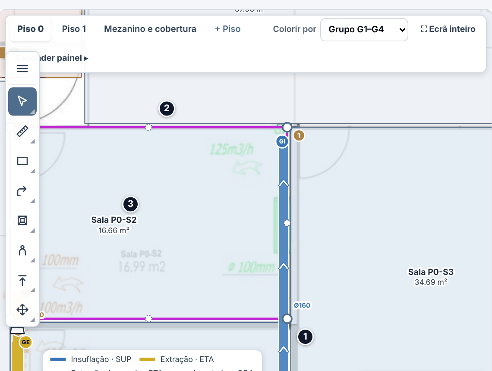
Também: Mover (M, ponto de base → destino; Ctrl copia), Rodar (Q, passos de 15° ou 90 + Enter) e Ctrl+D para duplicar a sala 1 m ao lado.
Mudar vários objetos de uma vez
Para dar o mesmo tipo a várias salas, ou o mesmo material a vários ramais.
- Clique na primeira sala ou ramal; depois Shift+clique nos outros 1 (outra vez tira-os).
- Ou arraste a partir de uma zona vazia: da esquerda para a direita apanha só o que fica todo dentro; da direita para a esquerda apanha também o que a janela toca.
- Confira os nomes no painel 2.
- Mude o campo 3: muda em todos.
Um só Ctrl+Z desfaz a mudança em todos. Delete apaga os desenhos selecionados; Esc limpa a seleção.
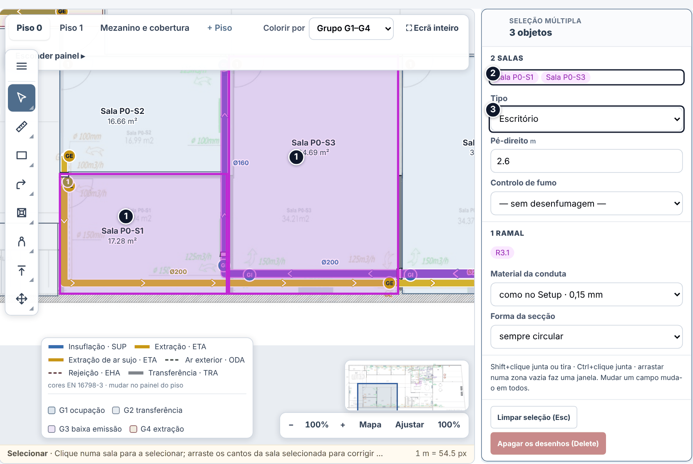
Contar pessoas, aparelhos e lugares
Em vez de escrever a ocupação, as louças ou os lugares, conte-os na planta.
- Abra o grupo Ocupação e aparelhos 1 e escolha Pessoa, Sanita, Urinol, Duche ou Lugar.
- Clique dentro da sala, uma vez por pessoa ou aparelho 2.
- Confira o total no campo da sala 3.
O campo passa a esse total e o caudal recalcula (ex.: 7 pessoas × 24 = 168 m³/h).
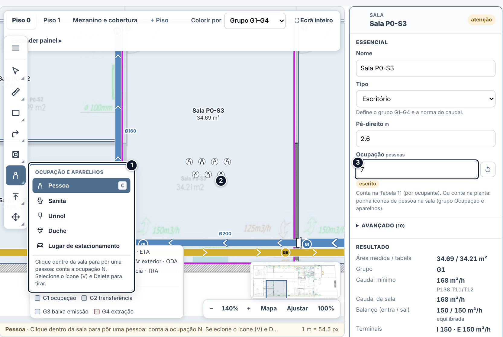
- O ícone é recusado: as louças só entram em sanitários e balneários, os lugares só em garagens.
- Para tirar um ícone, selecione-o e carregue em Delete; o total acompanha.
Condutas e equipamentos
Traçar um ramal
O ramal principal começa no equipamento; um sub-ramal começa em cima de outro ramal. O sentido conta: o Ø maior fica no início.
- Escolha Ramal (L).
- Clique o início: no equipamento, em cima de outro ramal (fica sub-ramal dele) ou num sítio livre.
- Clique as mudanças de direção; termine com Enter ou duplo clique.
- Num ramal principal novo, escolha no cartão o equipamento, ou crie um: tipo de sistema, rede e nome (a sigla do projeto, ex.: VAN P0 N).
- Selecione o ramal e confira o painel: equipamento 2 e nível 3.
Os terminais por onde passa ficam ligados e as setas mostram o sentido do ar.
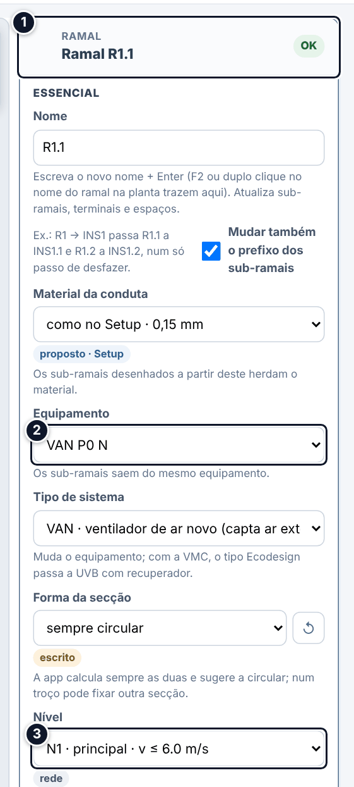
- Uma seta aponta ao contrário: o ramal foi desenhado do lado errado. Use Inverter o sentido no painel.
- Aviso «Sub-ramal solto»: arraste o primeiro vértice para cima do ramal-pai.
Pôr o equipamento na planta
Cada ventilador, UTA ou VCM pode ter o seu lugar; os ramais principais começam nele. Os dados da máquina continuam no passo UTAs.
- Escolha Equipamento (U).
- Clique junto ao início de um ramal principal 1: fica aí o equipamento desse ramal.
- Se o painel o propuser, clique em Ligar os ramais ao equipamento.
- Leia o resultado 2: caudal, fugas, Δp, potência e SFP.
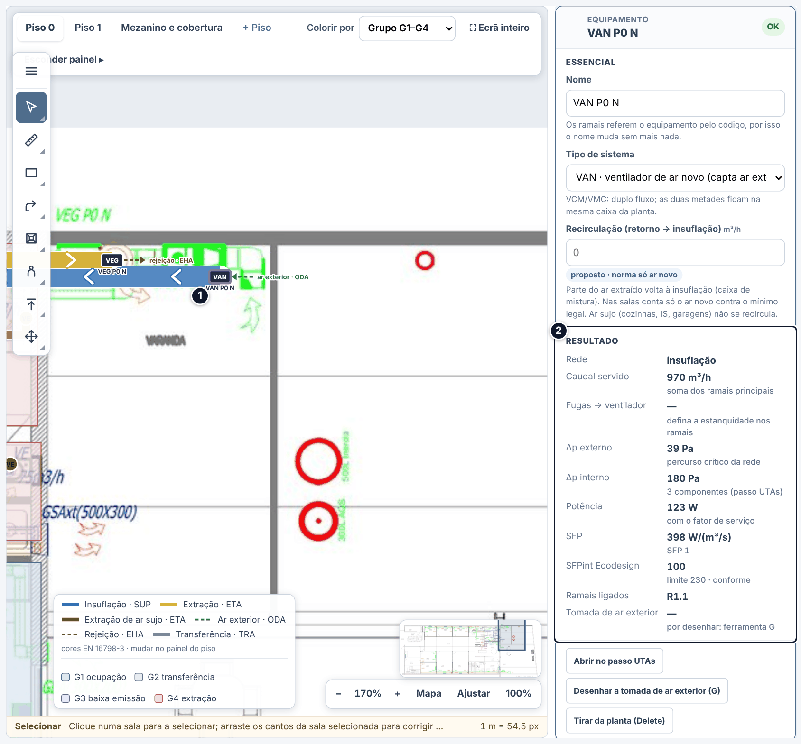
VCM e VMC: as duas metades numa caixa
Um equipamento de duplo fluxo fica numa só caixa com 4 ligações: ar exterior (ODA) a entrar, rejeição (EHA) a sair, e os ramais de insuflação e de extração. Se as metades ainda não estão juntas, o painel propõe Juntar com «…».
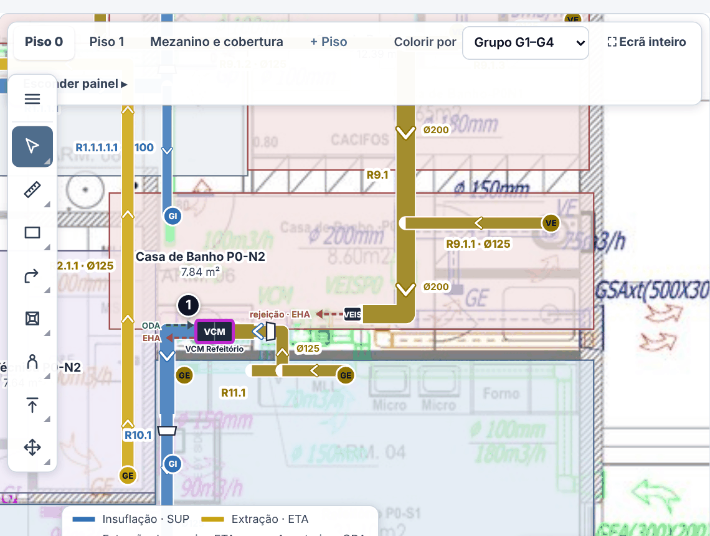
Ajustar o Ø de um troço
A app escolhe o Ø de cada troço e reduz a seguir a cada derivação. Pode mudar onde e como reduz.
- Selecione o ramal e clique num troço 1.
- No painel do troço 2, escreva uma secção fixa:
250(circular) ou400×200(retangular); ou use Usar circular / Usar retangular. - Confira o resultado 3: velocidade, perda R e Δp.
- Para adiar uma redução, arraste o seu símbolo ao longo do troço; para a tirar, clique nela e Delete.
- Voltar à secção calculada repõe o cálculo; Esc volta ao ramal.
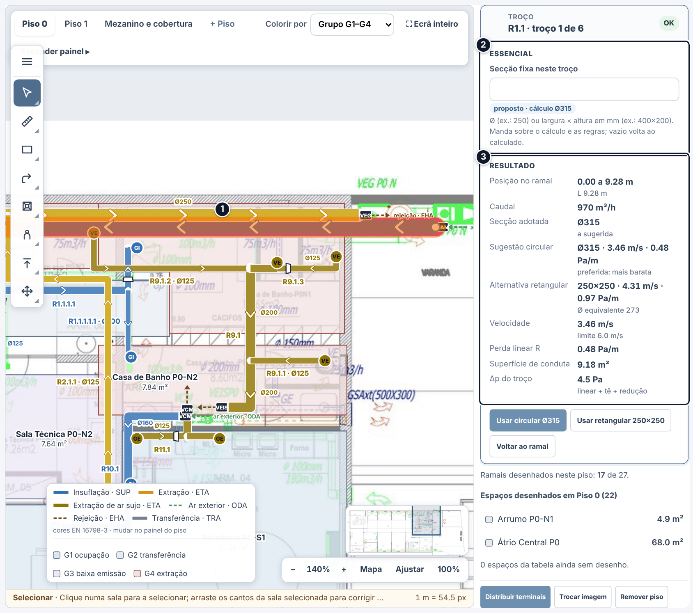
- «Velocidade acima do limite» em Por fazer: a secção fixa é pequena para o caudal; escolha a seguinte.
- «A secção aumenta a jusante»: uma secção fixa é maior do que a anterior; confirme se é isso que quer.
As regras do ramal (critério, série, saltos mínimos, reduções só onde marcar, máximo de reduções) estão em Campos por objeto; o cálculo, em Como a app escolhe o Ø.
Mudar o nome de um ramal
- Faça duplo clique no nome do ramal na planta, ou selecione-o e carregue em F2.
- Escreva o novo nome e Enter.
- Com Mudar também o prefixo dos sub-ramais ligado, R1.1 → INS1 passa R1.1.1 a INS1.1.
Sub-ramais, terminais e espaços acompanham. Um Ctrl+Z desfaz tudo; um nome repetido é recusado.
Pôr um acessório
Registos, corta-fogos, silenciadores e flexíveis ficam onde estão no ramal e somam a sua perda a esse troço e a jusante.
- Escolha Acessório (A), ou botão direito no ramal → Pôr um acessório.
- No painel 4, escolha o tipo.
- Clique no ramal, no sítio do acessório 1 2 3.
- Se tiver o catálogo, escreva o Δp do fabricante no painel do acessório.
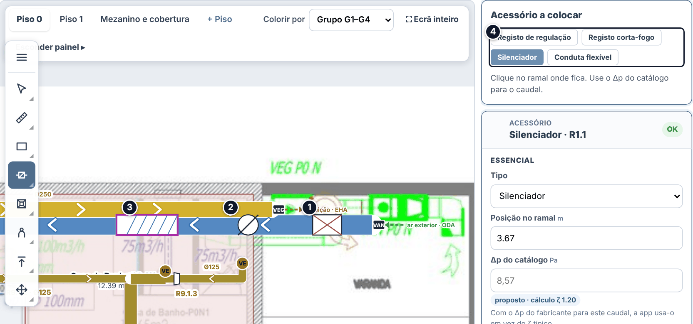
Ligar pisos com uma prumada
A prumada é a conduta que sobe ou desce de um piso para outro. O L é a diferença das cotas dos pisos.
- No piso de saída, escolha Prumada (K) e clique no ramal onde a conduta muda de piso 1.
- No cartão 2, escolha o piso de chegada e o ramal (novo, ou um da tabela ainda sem desenho); Criar prumada.
- No painel da prumada, Ver no outro piso: arraste o círculo de chegada para o sítio certo.
- No piso de chegada, trace os ramais (L) a partir do círculo.
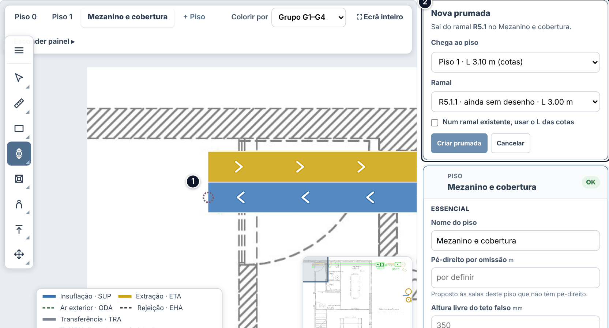
- L vazio: escreva a Cota do pavimento dos dois pisos no painel do piso.
- O círculo de chegada fica no sítio errado: as plantas de cada piso têm enquadramentos diferentes; arraste-o.
Pôr a tomada e a rejeição
A insuflação capta ar exterior (tomada ODA); a extração rejeita (EHA). A grelha e a conduta até ela somam ao Δp do equipamento.
- Selecione o equipamento e escolha Tomada / rejeição (G).
- Clique na fachada 1; numa VCM, o primeiro clique é a tomada e o segundo a rejeição 2.
- No painel 3, escolha o tipo e a dimensão (a app propõe uma) e, se tiver, o Δp do catálogo.
Um traço vermelho com a distância aparece se a rejeição estiver a menos de 2 m da tomada (8 m para ar sujo).
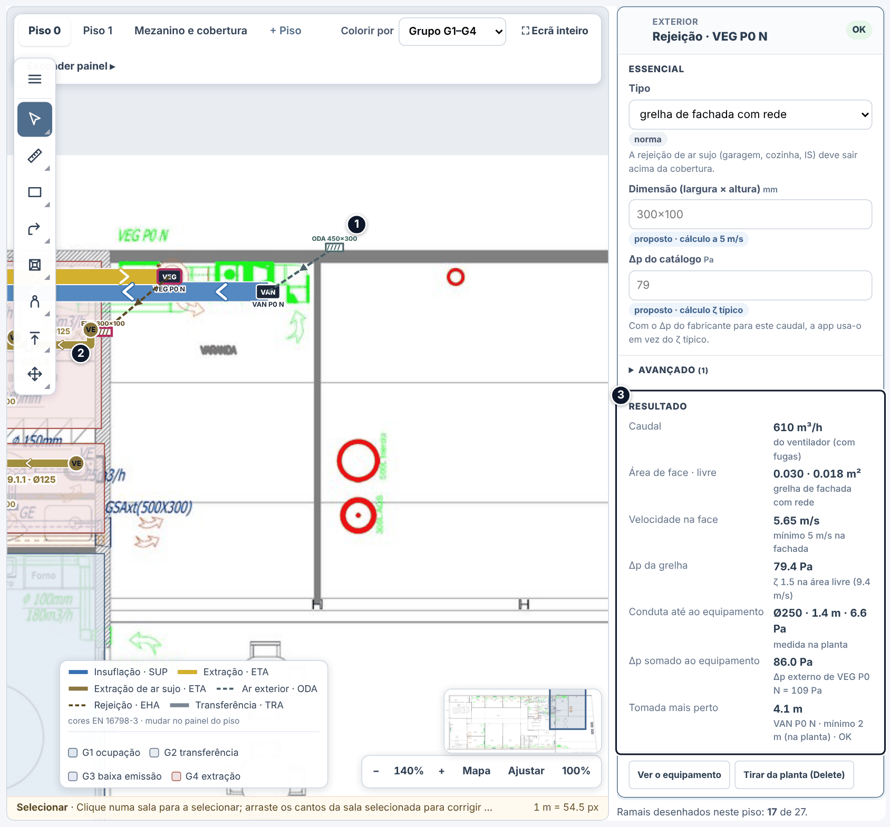
Abrir a sala para o exterior
- Escolha Abertura para o exterior (O) e clique na parede da sala.
- Deixe o caudal vazio para a app propor o que fecha o balanço, ou escreva-o.
O símbolo mostra o caudal e a área livre a 2 m/s (ex.: 60 m³/h, 0,008 m²).
Recircular parte do ar
Numa UTA de duplo fluxo com caixa de mistura, parte do ar extraído volta à insuflação.
- Selecione o equipamento de insuflação.
- Escreva o caudal em Recirculação (retorno → insuflação).
A caixa mostra a seta RCA (violeta); o ar exterior e o ar rejeitado descem esse caudal; as salas contam só o ar novo.
- Erro na Verificação: ar sujo (copa, IS, garagem) não se recircula, nem mais do que a extração tem.
Terminais e passagens de ar
Pôr e orientar um terminal
- Escolha Terminal (D) e clique dentro da sala 1: entra o próximo terminal dessa sala ainda sem lugar. Em cima de um ramal da mesma rede, fica ligado a ele.
- Com o terminal selecionado, confira a Direção do jato 2 (proposta da parede mais perto) ou use Rodar 90°.
- Leia o alcance no resultado 3 e na planta: setas a tracejado com «alcance / distância à parede».
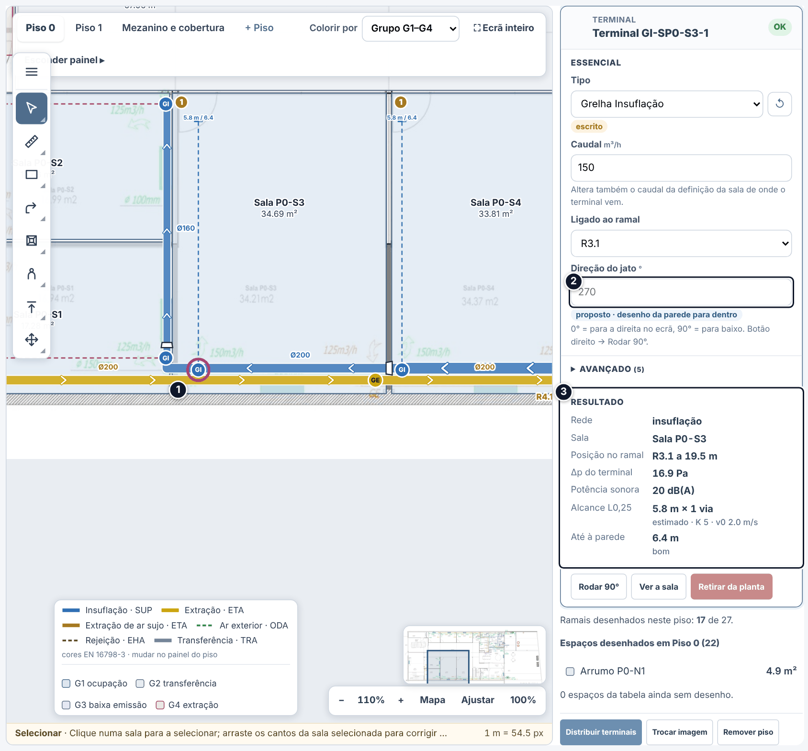
- Seta vermelha: o jato bate na parede antes de abrandar. Baixe a velocidade, rode o terminal ou mude o tipo.
- Seta laranja: o jato não chega a metade da sala.
Para ver os alcances de todos os terminais: Mostrar os alcances dos terminais, no painel do piso ou no botão direito.
Passar ar entre salas
- Escolha Transferência (X).
- Clique a sala de onde o ar sai e depois a sala para onde entra.
- No painel, confirme o caudal proposto pelo balanço, o tipo de passagem e o ΔP.
- Recusada: a Portaria 138-I não deixa levar ar de um espaço sujo (ex.: instalação sanitária) para um mais limpo. Inverter direção troca as salas.
Segurança contra incêndio
Definir o controlo de fumo
A app avisa quando o RT-SCIE o exige (efetivo acima de 500, ou piso enterrado com mais de 200 pessoas ou 400 m²). Para outros casos, marque Exigir controlo de fumo na sala.
- Selecione a sala e, em Avançado, escolha desenfumagem passiva ou ativa. Nos corredores, escreva também a largura em UP.
- Abra o grupo Segurança contra incêndio 1.
- Ponha a extração de fumo 2, junto ao teto, e a admissão de ar 3, em baixo.
- Leia o resultado da sala: caudais, número de bocas, área de admissão e alcance.
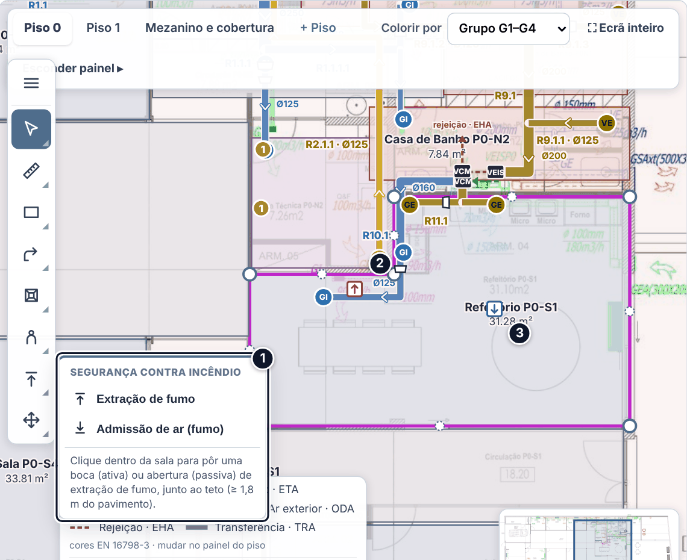
- «Pontos fora do alcance» ou «aberturas afastadas de mais»: acrescente aberturas.
- Passiva recusada: acima de 12 m de altura tem de ser ativa.
Pressurizar uma escada
- Selecione a sala do tipo Escadas e marque Escada pressurizada (ou botão direito → Pressurizar a escada).
- Escreva o ΔP com as portas fechadas (20 a 80 Pa), a velocidade na porta aberta e a força de abertura.
Na planta aparece o selo «P+ 50 Pa» (e «CCF» com câmara corta-fogo).
Fechar
Verificar o desenho
- Em Colorir por 1, escolha Dados em falta.
- Clique em cada sala com círculo numerado 2 e leia Por fazer e avisos no painel.
- Resolva cada aviso com a ação proposta (ver Avisos do desenho).
O desenho está pronto quando o painel do piso mostra OK e nenhuma sala tem círculo.
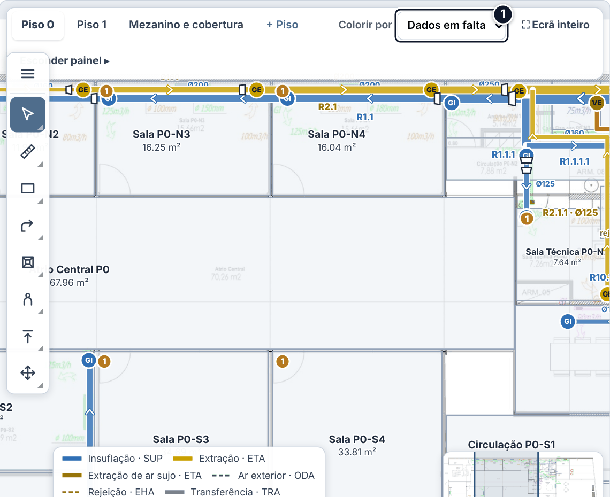
Referência
Tabelas para consultar
A mesma organização da barra de ferramentas e do painel lateral.
Ferramentas e teclas
As teclas seguem o SketchUp (uma tecla por ferramenta) e, para os modos permanentes, as teclas de função do AutoCAD. O que não existe nesses programas usa a inicial em português.
| Grupo | Ferramenta | Tecla | O que faz |
|---|---|---|---|
| Navegar | Selecionar | V ou Espaço | escolhe e edita salas, ramais e terminais |
| Mão | H, ou manter Espaço | move a vista | |
| Medir | Escala | S | calibra a escala por uma cota |
| Medir | T | mede sem criar nada | |
| Salas | Retângulo | R | sala retangular; aceita 4;3 |
| Polígono | P | sala de qualquer forma | |
| Condutas | Ramal | L | traçado de conduta |
| Prumada | K | conduta que muda de piso | |
| Acessório | A | registo, corta-fogo, silenciador, flexível | |
| Equipamento | U | ventilador, UTA ou VCM na planta | |
| Tomada / rejeição | G | grelha ODA/EHA na fachada | |
| Ar | Terminal | D | terminal da sala |
| Transferência | X | passagem de ar entre salas | |
| Abertura para o exterior | O | admissão natural na parede | |
| Contar | Pessoa | C | conta a ocupação |
| Sanita, urinol, duche, lugar | — | contam a Tabela 13 e os lugares | |
| Incêndio | Extração de fumo, admissão de ar | — | bocas e aberturas do controlo de fumo |
| Modificar | Mover | M | ponto de base → destino; Ctrl copia |
| Rodar | Q | centro → ângulo (15°) ou ângulo escrito | |
| Apagar | E | clique apaga o desenho (os dados ficam) |
Comandos e modos
| Comando | Tecla |
|---|---|
| Confirmar / terminar | Enter ou duplo clique |
| Cancelar / largar a seleção | Esc |
| Apagar o selecionado | Delete |
| Desfazer / refazer | Ctrl+Z / Ctrl+Y |
| Mudar o nome | F2 (ou duplo clique no nome do ramal) |
| Duplicar a sala | Ctrl+D |
| Juntar à seleção / tirar | Shift+clique; Ctrl+clique só junta |
| Ângulo reto (enquanto premido) | Shift |
| Modo orto | F8 |
| Encaixe sem efeito (enquanto premido) | Alt |
| Encaixe ligado / desligado | F3 |
| Grelha de 0,50 m | F9 |
| Mostrar tudo / tamanho real | Shift+Z (ou F) / 0 |
| Aproximar / afastar | + / − ou a roda do rato |
Medidas escritas
Como no SketchUp: com o gesto começado, escreve-se e Enter, sem clicar numa caixa. A vírgula e o ponto servem de separador decimal; o ponto e vírgula separa as duas medidas do retângulo. Backspace corrige; Esc apaga.
| Ferramenta | Escreva | Resultado |
|---|---|---|
| Linha, polígono, ramal, medir | 3,5 | ponto a 3,50 m na direção do rato |
| Retângulo | 4;3 | 4 × 3 m, para o lado do rato |
| Mover | 2 | move 2 m na direção do rato |
| Rodar | 90 ou -90 | roda 90° para um lado ou para o outro |
Encaixe
O ponto prende-se ao que está a menos de 10 px no ecrã, por esta ordem:
| Ordem | Encaixa em | Marcador |
|---|---|---|
| 1 | vértice de outra sala ou terminal | quadrado |
| 2 | meio de parede | triângulo |
| 3 | parede (aresta) ou ramal | cruz |
| 4 | canto das paredes da imagem | quadrado, «canto da parede (imagem)» |
| 5 | face de uma parede da imagem | cruz, «parede (imagem)» |
| 6 | grelha de 0,50 m, se ligada | mais |
As paredes da imagem são as linhas escuras longas, horizontais e verticais, da planta importada; paredes inclinadas ou curvas não são detetadas. Desliga-se em Encaixar nas paredes da imagem (painel do piso, Avançado).
Gestos de edição
| Gesto | Resultado |
|---|---|
| Arrastar ● (vértice) | move o vértice; encaixa; Shift dá ângulo reto |
| Clicar ou arrastar ○ | acrescenta um vértice no meio da aresta |
| Duplo clique numa aresta | acrescenta um vértice nesse ponto |
| ● + Delete | apaga o vértice |
| Arrastar uma aresta | move o segmento inteiro |
| Arrastar o interior | move a sala e os seus terminais |
| Arrastar uma janela | esquerda → direita: tudo dentro; direita → esquerda: também o que toca |
| Inverter o sentido | troca o início e o fim do ramal |
Edições recusadas: sala que se cruza a si própria, sala com menos de 3 vértices, ramal com menos de 2 pontos. O Ctrl+Z guarda 40 passos, incluindo as cores das redes e o tamanho dos textos.
O painel lateral
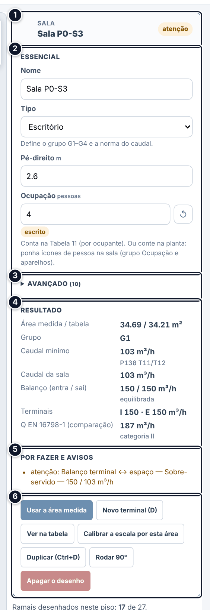
O painel mostra o objeto selecionado, sempre pela mesma ordem; sem seleção, mostra o piso.
- Cabeçalho: tipo, nome e estado (OK, atenção, erro, por fazer).
- Essencial: os dados sem os quais não se calcula.
- Avançado: fechado por omissão; fica como o deixar.
- Resultado: o que a app calculou.
- Por fazer e avisos: o que falta e o que a verificação encontrou.
- Ações: os botões do objeto.
Um campo vazio mostra o valor proposto e de onde vem (piso, norma, desenho, herdado, Setup, rede, pelo nome). Um valor escrito à mão fica marcado «escrito»; o botão ↺ repõe o proposto.
Campos por objeto
Piso
| Campo | O que faz |
|---|---|
| Pé-direito por omissão | proposto às salas do piso |
| Cota do pavimento | dá o comprimento das prumadas |
| Altura livre do teto falso | altura disponível dos ramais desenhados no piso |
| Norte | seta do norte (0° = para cima, no sentido dos ponteiros do relógio) |
| Mostrar sempre os nomes das salas | os nomes nunca se escondem; cedem os textos dos ramais |
| Tamanho dos textos | 0,6 a 1,6 × o tamanho automático |
| Cores das redes | para todo o projeto; ↺ repõe a cor da norma |
Sala
| Campo | O que faz |
|---|---|
| Tipo | dá o grupo G1–G4 e a norma do caudal; proposto pelo nome |
| Ocupação | Tabela 11; proposta pela densidade da EN 16798-1 (ex.: escritório 10 m²/pessoa) |
| Sanitas, urinóis, duches, regime | Tabela 13 (sanitários e balneários) |
| Lugares, deteção de CO | garagens (RT-SCIE, arts. 180.º–183.º) |
| Eficácia de remoção εv | Manual SCE, Tabela 68; vazio = a do Setup |
| Categoria EN 16798-1 | só para comparação |
| Abertura para o exterior | caudal por uma grelha permanente (+ entra, − sai) |
| Controlo de fumo, UP | desenfumagem passiva ou ativa; largura dos corredores |
| Escada pressurizada | ΔP, velocidade na porta aberta, força de abertura |
Ramal (passam aos sub-ramais)
| Campo | Valores |
|---|---|
| Material | rugosidade da conduta |
| Equipamento, tipo de sistema | de onde sai o ramal |
| Forma da secção | automática (circular; retangular se não couber), sempre circular, sempre retangular |
| Nível | N1 a N4: velocidade máxima 6 / 5 / 4 / 3 m/s |
| Altura disponível no teto | limite da secção retangular |
| Critério | perda de carga constante ou velocidade máxima do nível |
| Série de diâmetros | S1 (63 a 2000), S2 (100 a 2000) ou a do fornecedor |
| Relação de lados máxima | 4:1 por omissão |
| Reajuste do Ø | em cada derivação, só nos pontos marcados, ou Ø único |
| Troço mínimo, saltos mínimos, máximo de reduções | quando vale a pena reduzir |
| Estanquidade | classe A a D (fugas) |
| Isolamento | térmico, acústico ou os dois, com espessura |
| Curvas | no ζ do ramal, ou pela planta (ζ 0,25 a 90°) |
Terminal
| Campo | O que faz |
|---|---|
| Tipo, caudal, ramal | o terminal e a sua ligação |
| Direção do jato, vias, comprimento | alcance na planta |
| Montagem | teto, parede, pavimento ou na conduta; sai no Excel |
Tipos de sistema
| Sigla | O que é | Redes | Exterior |
|---|---|---|---|
| VAN | ventilador de ar novo | insuflação | capta (ODA) |
| VIN | ventilador de insuflação | insuflação | capta (ODA) |
| VEG | extração geral | extração | rejeita (EHA) |
| VEX | extração dedicada (garagem, cozinha) | ar sujo, extração | rejeita (EHA) |
| VEIS | extração das instalações sanitárias | ar sujo | rejeita (EHA) |
| VMC | duplo fluxo com recuperação | insuflação + extração | capta e rejeita |
| VCM | ventilação controlada mecânica | insuflação + extração ou ar sujo | capta e rejeita |
No passo UTAs, a legenda de siglas do projeto diz a que tipo corresponde cada sigla (ex.: VEISP → VEIS); ganha a sigla mais comprida.
Siglas dos terminais
| Sigla | Terminal | Rede | Vias |
|---|---|---|---|
| GI | grelha de insuflação | insuflação | 1 |
| DI | difusor de teto | insuflação | 4 |
| DLI | difusor linear | insuflação | 1 ou 2 |
| JA | jato de ar | insuflação | 1 |
| GE | grelha de extração | extração | — |
| VE | válvula de extração | extração de ar sujo | — |
| BE | boca de extração | extração | — |
Cores das redes
As da EN 16798-3 e da EN 12792. A conduta fica sempre na cor da rede; um ramal com erro ou atenção ganha um contorno tracejado vermelho ou âmbar. O que está selecionado fica em magenta.
| Ar | Sigla | Cor |
|---|---|---|
| Insuflação | SUP | #2F6FB5 |
| Extração | ETA | #C9A000 |
| Extração de ar sujo | ETA | #8F7400 |
| Ar exterior | ODA | #2E8B3E, tracejado |
| Rejeição | EHA | #7A4A24, tracejado |
| Transferência | TRA | #7B8494 |
| Seleção | — | #C026D3 |
Avisos do desenho
| Aviso | Quando | Como resolver |
|---|---|---|
| Área desenhada ≠ tabela | diferença acima de 15 % | Usar a área medida, corrigir o desenho ou Aceitar a diferença |
| Terminal fora da sala | não está dentro do desenho da sua sala | arrastá-lo, ou Colocar os terminais na sala |
| Terminal longe do ramal | mais de 0,5 m do traçado | arrastá-lo para cima do ramal |
| Sub-ramal solto | o início não está sobre o ramal-pai | arrastar o primeiro vértice para o ramal-pai |
| L desenhado ≠ tabela | diferença acima de 10 % e de 0,5 m | Usar o L medido |
| Transferência longe da porta | a seta não passa numa abertura | mover a seta para a porta |
| Terminais ≠ definição | a soma difere do caudal definido | corrigir o caudal do terminal |
Parâmetros
| Parâmetro | Valor |
|---|---|
| Tolerância do encaixe | 10 px no ecrã |
| Passo da grelha | 0,50 m |
| Passo da rotação | 15° |
| Cópia com Ctrl+D | 1,00 m para a direita e para baixo |
| Fechar o polígono no 1.º ponto | menos de 10 px |
| A tabela acompanha o desenho | área igual até 1 %; L igual até 2 % |
| Passos de desfazer | 40 |
| Altura real dos textos | nome da sala 0,40 m; ramal 0,28 m; Ø 0,22 m (com mínimo e máximo no ecrã) |
Para imprimir
Folha rápida
Uma página A4 para ter ao lado do teclado. O botão Imprimir folha rápida, no topo, imprime só esta secção.
Desenhar
- R
- retângulo ·
4;3Enter - P
- polígono · fechar no 1.º ponto
- L
- ramal · Enter termina
- K
- prumada
- U
- equipamento
- G
- tomada / rejeição
- A
- acessório
- D
- terminal
- X
- transferência
- O
- abertura para o exterior
- C
- contar pessoas
Selecionar e mudar
- V Espaço
- selecionar
- Shift+clique
- juntar / tirar
- janela →
- só o que fica dentro
- janela ←
- também o que toca
- M Q E
- mover · rodar · apagar
- Ctrl+D
- duplicar a sala
- F2
- mudar o nome
- Delete
- apagar o selecionado
Precisão
3,5Enter- comprimento na direção do rato
- Shift
- ângulo reto
- Alt
- sem encaixe neste clique
- F3 F8 F9
- encaixe · orto · grelha
- S T
- escala · medir
Vista e controlo
- Enter
- confirmar
- Esc
- cancelar / largar
- Ctrl+Z / Y
- desfazer / refazer
- H
- mão
- F 0
- mostrar tudo · tamanho real
- botão direito
- ações do objeto
Porquê
O cálculo e as normas por trás das propostas
Para perceber de onde vem cada valor proposto e quando vale a pena mudá-lo.
Como a app escolhe o Ø
Cada troço tem o caudal dos terminais a jusante. A app procura, na série escolhida, o menor Ø que cumpre duas condições: a perda de carga perto da perda alvo (perda constante) e a velocidade abaixo do limite do nível do ramal (6, 5, 4 ou 3 m/s, do principal aos terminais, por causa do ruído). Depois de cada derivação o caudal desce e o Ø pode descer também.
Reduzir em todas as derivações poupa conduta mas multiplica peças. As regras do ramal servem para equilibrar: troço mínimo (um troço curto mantém o Ø), saltos mínimos (só reduz quando desce dois tamanhos) e máximo de reduções (escolhe as que mais poupam, pela soma de Ø × comprimento).
A app calcula sempre as duas secções e prefere a circular, por ser mais barata; passa à retangular (EN 1505, deitada, até 4:1) só quando o Ø mais o isolamento não cabe na altura disponível — a do ramal, a do teto falso do piso ou a do Setup, por esta ordem.
Fugas e caudal do ventilador
Com a classe de estanquidade (EN 12237 para circulares, EN 1507 para retangulares), a fuga por m² de conduta é f = c · p0,65 · 10⁻³ m³/(s·m²), com p a pressão do percurso crítico. O ventilador move o caudal servido mais as fugas; a potência e o SFP usam esse caudal.
| Classe | c | Fuga a 200 Pa (m³/h por 10 m²) |
|---|---|---|
| A | 0,027 | 30,4 |
| B | 0,009 | 10,1 |
| C | 0,003 | 3,4 |
| D | 0,001 | 1,1 |
Perdas térmicas e condensação
Nos ramais de insuflação a app calcula o calor que atravessa a parede da conduta, a variação de temperatura do ar e a temperatura da superfície. Se a superfície fica abaixo do ponto de orvalho do ar à volta, há condensação: a app propõe a espessura mínima de isolamento (λ 0,035). Por omissão: ar a 16 °C, envolvente a 26 °C e 60 %.
Ar novo, retorno e recirculação
A Portaria 138-I fixa o ar novo mínimo de cada espaço. Com recirculação, só a parte exterior conta: QODA = QSUP − QRCA e QEHA = QETA − QRCA. Por isso cada sala mostra o Ar novo servido (insuflação × fração de ar novo). O ar sujo (ETA 3 e 4: copas, instalações sanitárias, garagens) nunca se recircula.
Tomadas e rejeições
A EN 13779 (Anexo A.2), retomada pela EN 16798-3, separa a tomada da rejeição para o ar rejeitado não voltar a entrar.
| Regra | Valor |
|---|---|
| Velocidade na face da tomada | ≤ 2 m/s |
| Rejeição na fachada | ≥ 5 m/s e ≤ 0,5 m³/s por abertura |
| Rejeição ↔ tomada | ≥ 2 m |
| Ar sujo | ≥ 8 m da tomada; sair acima da cobertura |
Alcance dos terminais
O alcance L0,25 é a distância até onde o jato abranda para 0,25 m/s. É bom quando fica entre metade e a totalidade da distância à parede: menos, o ar não chega ao fundo da sala; mais, o jato bate na parede ainda rápido. Sem catálogo, a app usa o jato livre L = K · v0 · √A0 / 0,25, com K típico 5 (grelha), 6,2 (jato), 3,5 (linear) e 1,2 (difusor de teto).
Controlo de fumo
O RT-SCIE (Portaria 1532/2008, alterada pela Portaria 135/2020) pede controlo de fumo, entre outros casos, com efetivo acima de 500 e em pisos enterrados com mais de 200 pessoas ou 400 m² (art. 135.º).
| Método | O que a app calcula |
|---|---|
| Ativa, sala | extração = máx(1,5 m³/s; 1 m³/s por 100 m²); 1 boca por 320 m²; admissão ≈ 60 % da extração a menos de 5 m/s |
| Ativa, corredor | 0,5 m³/s por UP; bocas a no máximo 15 m |
| Passiva, sala | alcance = 7 × pé-direito (máx. 30 m); não permitida acima de 12 m |
| Passiva, corredor | aberturas de 0,10 m² por UP, a no máximo 10 m |
| Grandes locais | cantões acima de 1600 m² ou 60 m de lado |
Escadas pressurizadas: 20 a 80 Pa com as portas fechadas (art. 161.º; EN 12101-13).
Valores propostos e herança
A app nunca deixa um campo sem valor: propõe um e diz de onde vem. O pé-direito vem do piso; as renovações e as cores, da norma; a área, o comprimento e o ζ das curvas, do desenho; o tipo de sistema, do nome; a ocupação, da densidade da EN 16798-1. Um valor escrito à mão manda sobre o proposto até carregar em ↺.
Nos ramais, a especificação (material, altura disponível, série, regras, estanquidade, isolamento) passa aos sub-ramais desenhados a partir dele, até um deles ter o seu próprio valor.